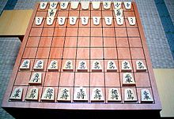

|
История шахмат
Аль-Бируни в книге «Индия» рассказывает древнюю легенду, которая приписывает создание шахмат некоему брамину.
За своё изобретение он попросил у раджи незначительную, на первый взгляд, награду: столько пшеничных зёрен, сколько окажется
на шахматной доске, если на первую клетку положить одно зерно, на вторую — два зерна, на третью — четыре зерна и т. д.
Оказалось, что такого количества зерна нет на всей планете
(оно равно 264 - 1 = 18 446 744 073 709 551 615 = 1,845х1019 зёрен, чего достаточно, чтобы заполнить хранилище объёмом 180 км3).
Так это было, или не совсем, сказать сложно, но, так или иначе, родиной шахмат является Индия.
|
Чатуранга |
|
|
Не позже начала VI века на северо-западе Индии появилась первая известная нам игра, родственная шахматам — чатуранга.
Каждый игрок имел по четыре фигуры (колесница (ладья), конь, слон, король и по четыре пешки.
Конь и король ходили так же, как в шахматах, колесница — в пределах двух полей по вертикали и горизонтали,
слон — сначала на одно поле вперёд или по диагонали, позже он стал прыгать через одно поле по диагонали, причём,
подобно коню, при ходе мог перешагивать через свои и неприятельские фигуры. Ферзя не было вовсе.
Для выигрыша в партии нужно было уничтожить всё войско противников. |
| Сянци |
Одновременно с продвижением шахматной игры на запад, она распространялась и на восток.
Судя по всему, в страны Юго-Восточной Азии попал или вариант чатуранги для двух игроков, либо какой-то из ранних вариантов шатранджа.
Некоторые правила:
Способ постановки фигур на доску. Фигуры ставятся не на поля, а на «пункты» — точки пересечения линий доски.
Доска состоит из 9 вертикальных и 10 горизонтальных линий, то есть содержит 90 пунктов.
Некоторые фигуры имеют ограниченную область действия, то есть могут ходить только в пределах определённой части доски.
Конь и слон, «прыгающие» в шатрандже, здесь ходят в плоскости доски и не могут прыгать через поля, занятые другими фигурами).
Добавлена новая фигура «пушка», которая может бить фигуры противника только перепрыгивая при ударе через другую фигуру.
| |
| Сёги |
|  |
Появившийся позже японский вариант —
сёги, — считается потомком сянци, но имеет свои особенности, наводящие на предположение
о родстве с макруком. Доска для сёги проще и больше похожа на европейскую: фигуры ставятся на поля,
а не на пересечения, размер доски 9x9 клеток, начальная позиция и ходы некоторых фигур близки к макруку.
|
| Макрук |
Механизм превращения оригинален — фигура
(плоская фишка с нанесённым изображением), достигнув одной из трёх последних горизонталей,
просто переворачивается на другую сторону, где изображён знак превращённой фигуры.
И наиболее
интересная особенность сёги — взятые игроком фигуры соперника могут быть вместо очередного хода выставлены
им в любое место доски (с некоторыми ограничениями) как свои. Из-за этого в комплекте сёги все фигуры имеют один цвет, а
принадлежность их определяется постановкой — игрок ставит фигуру на доску остриём к противнику.
|  |
| Русские шахматы |
|
Приблизительно в 820 году шахматы появились на Руси, придя, как считается, либо прямо из
Персии через Кавказ и Хазарский Каганат, либо от среднеазиатских народов, через Хорезм.
Русское название игры созвучно среднеазиатскому «шахмат», русские названия фигур более всего соответствуют арабским или персидским. Ладья,
по одному из предположений, получила такое название вследствие того, что соответствующая арабская фигура «рух» изображала мифическую птицу, и
была похожа на стилизованное изображение русской ладьи.
|
| Европейские шахматы |
Европейские мастера продолжили преобразование правил, в конечном итоге превратив шатрандж в современные шахматы.
К XV веку шахматы приобрели, в общем, современный облик, хотя из-за несогласованности изменений ещё несколько веков в разных странах бытовали
собственные, иногда достаточно причудливые, особенности правил.
В Италии, например, вплоть до XIX века пешка, достигшая последней горизонтали,
могла превращаться только в фигуры, которые уже сняты с доски. При этом ходить пешкой на последнюю горизонталь при отсутствии таких фигур не запрещалось;
такая пешка оставалась пешкой и превращалась в первую взятую противником фигуру в момент, когда противник её брал. Там же была разрешена рокировка при
наличии между ладьёй и королём фигуры и при прохождении королём битого поля.
| |